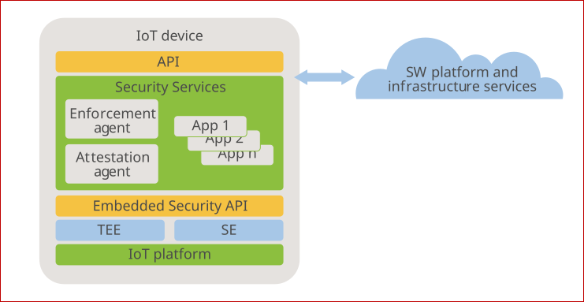
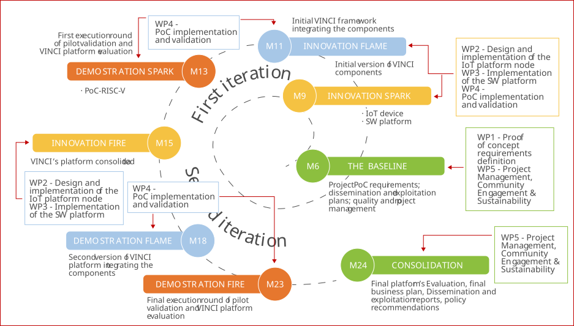

Improving IoT
Lifecycle Management
in RISC-V Architecture
VINCI delivers a secure-by-design framework for IoT devices, leveraging open-source RISC-V hardware and trusted software to manage the entire lifecycle—from deployment to decommissioning
This project builds upon the technological foundations of the H2020 CERTIFY initiative and the national ONOFRE-3 platform, aiming to consolidate a secure, flexible and auditable IoT architecture based on the open RISC-V standard.
ABOUT the PROJECT
VINCI aims to enhance the security, trust, and operational assurance of connected devices throughout their entire lifecycle. The project focuses on integrating open-hardware principles, formal verification methods, and lightweight security frameworks to build customizable, software-based Trusted Execution Environments (TEEs) for RISC-V–based IoT systems.
By combining the flexibility of open architectures with embedded security primitives, VINCI provides a foundation for secure device onboarding, attestation, configuration, and maintenance. The project develops a unified framework that connects hardware-level trust anchors with software-defined protection mechanisms, enabling continuous assessment and reliable over-the-air updates in distributed IoT environments.
VINCI builds upon the outcomes of previous projects such as ONOFRE-3 and CERTIFY, extending their results towards a complete lifecycle management model aligned with current cybersecurity frameworks and European initiatives on technological sovereignty. The project’s modular approach facilitates interoperability between heterogeneous IoT devices and promotes open, verifiable, and reusable security components for future industrial applications.

METHODOLOGY and IMPLEMENTATION

VINCI adopts an agile and iterative methodology to ensure that technological developments evolve in parallel with continuous validation and feedback from real-world environments. The project is structured around five main work packages (WPs), each contributing to the design, implementation, and validation of the secure IoT lifecycle management framework.
The process is organized into two iterative development cycles, combining research, prototyping, and demonstration phases. Each iteration integrates the outcomes of previous tasks and refines them through testing and stakeholder engagement, ensuring that the Proof of Concept (PoC) progressively matures into a functional and validated solution. During the first iteration, the focus is on defining requirements, designing the IoT and software platforms, and executing an initial validation round in a controlled environment. This phase culminates with the Demonstration Spark, where the first VINCI framework prototype is tested on RISC-V devices.
The second iteration builds upon the insights gained, consolidating the VINCI platform through advanced integration, optimization, and validation activities. The final phase, Consolidation, delivers the complete platform evaluation, business plan, and dissemination outcomes, ensuring the technological and commercial readiness of the solution.
This structured yet flexible methodology enables VINCI to align research excellence with industrial applicability, ensuring that each development milestone contributes to a robust, secure, and sustainable IoT ecosystem.
RESULTS and IMPACT
VINCI delivers a secure-by-design framework for managing the entire lifecycle of IoT devices, from design to decommissioning. The project combines open-hardware architectures, formal verification methods, and software-based Trusted Execution Environments (TEEs) to ensure operational assurance, integrity, and resilience across heterogeneous IoT systems.
At the technical level, VINCI’s main results include:
- Improved IoT Device Architecture based on RISC-V, integrating lightweight cryptographic primitives and secure elements for trusted bootstrapping, configuration, and attestation.
- Customizable Trusted Execution Environments (TEEs) providing continuous runtime monitoring, remote attestation, and self-intrusion detection for embedded devices.
- Secure Bootstrapping and Maintenance Mechanisms, aligned with NIST and IETF standards, enabling over-the-air (OTA) security patching and decentralized update validation.
- Integrated Lifecycle Management Framework that connects hardware and software trust anchors, ensuring interoperability with commercial off-the-shelf (COTS) devices.
Together, these developments strengthen Europe’s technological sovereignty in open hardware and cybersecurity while advancing the adoption of RISC-V–based secure systems. VINCI enhances the trustworthiness of connected infrastructures by reducing exposure to cyberthreats, improving firmware integrity verification, and facilitating standardization through open, auditable designs.
The project’s scientific and socio-economic impact extends beyond research outcomes. VINCI contributes to EU initiatives promoting open standards and trusted computing, supports SMEs through transferable technologies, and creates new employment and training opportunities in IoT security. Its results are expected to accelerate innovation in sectors such as smart industry, critical infrastructure, and digital services, reinforcing Europe’s competitiveness in the global cybersecurity landscape.